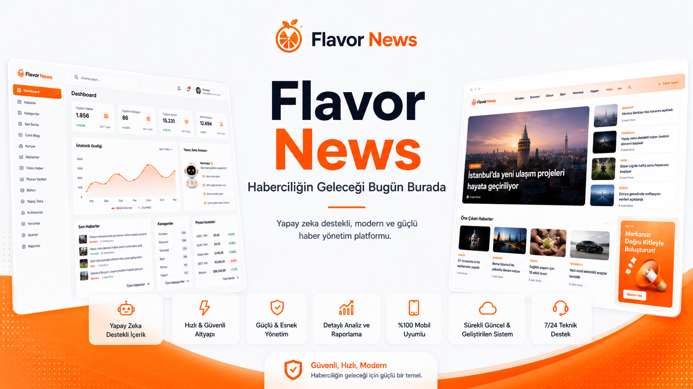
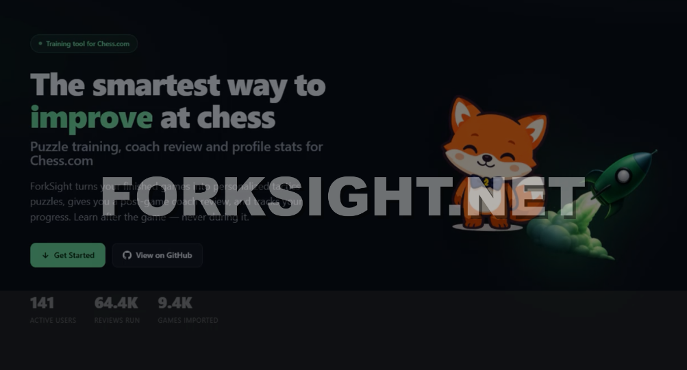

Projelerim
Üzerinde çalıştığım ve geliştirdiğim yazılımların kısa bir kataloğu.

Flavor News
Haber Sitesi Yazılımı. Güncel içerikleri düzenli ve okunabilir bir arayüzle sunmayı amaçlayan web uygulaması.
Detay
ForkSight
Chess Coach Extension. Satranç oyuncularına analiz ve koçluk desteği sunan tarayıcı eklentisi.
DetayChessCV
Chess Profile Analysis. Oyuncu profilini ve oyun verilerini inceleyerek performans özeti çıkaran araç.
Detay